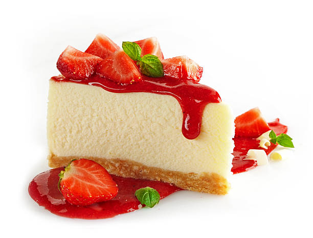

Delicious Bites Menu
Appetizers
-

Bruschetta
Bruschetta is an Italian antipasto consisting of grilled bread often topped with olive oil and salt.
-

Stuffed Mushrooms
Stuffed mushrooms is a dish prepared using edible mushrooms as its primary ingredient.
-

Garlic Bread
Garlic bread consists of bread, topped with garlic and occasionally olive oil or butter.
-
Frost-Filled Cookies
These frosting filled cookies combine creamy, not-too-sweet butter-cream and buttery chocolate chip cookies.
Main Courses
-
Grilled Salmon
Grilled Salmon is a healthy and delicious main course featuring a perfectly grilled fillet of salmon.
-

Chicken Alfredo Pasta
Chicken Alfredo Pasta is a classic Italian-American dish that combines tender pieces of grilled chicken with a creamy Alfredo sauce.
-

Caprisce Salad
Caprese salad is an Italian salad, made of sliced fresh mozzarella, tomatoes, and sweet basil, seasoned with salt, and olive oil.
-

Beef Wellington
A luxurious dish with tender beef fillet, pâté, and duxelles, wrapped in puff pastry and baked, served with red wine sauce and roasted vegetables.
Desserts
-

Tiramisu
An Italian dessert made with layers of coffee-soaked ladyfingers, mascarpone cheese, and cocoa.
-

Ice Cream
A frozen dessert made from cream, sugar, and various flavorings, served cold.
-

Cheesecake
A creamy dessert with a graham cracker crust and a smooth, rich cheese filling.
-

Chocolate Cake
A rich and moist cake made with layers of chocolate sponge and chocolate frosting.